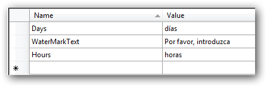

1. In the Solution Explorer, right-click the sample application project and choose Unload Project from the context menu. The project will be unavailable.
2. Right-click the project again, and select the Edit SampleProjectName.csproj option.
3. In the .csproj file, find the <SupportedCultures></SupportedCultures> tags. By default, the tags will be empty. Add the cultures that you want to be supported, separating each with a semicolon if more than one.
For example: <SupportedCultures>es</SupportedCultures>
4. Save the project and right-click the SampleProjectName.csproj to reload it.
5. Choose Reload SampleProjectName.csproj.
6. In the .resx file, change the following value:

Fig 165: SampleProjectName.csproj after setting value in Spanish culture